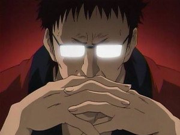

[團務與邀約] 【DRYH】十殿
| MADAO  小學部畢業生
| 上台說話的大中小簡繁發表於 10-10-2012 01:42 AM 只看該作者  【DRYH】十殿你已經死了。 你可能是自殺、可能是他殺、可能是其他意外造成的非自然死亡。 你也許是被火燒死、也許是被車撞死、也許是被北斗神拳的傳承者當成沙包打死。 你或許知道自己已經死亡、或許還弄不清楚是怎麼一回事。 但唯一能夠確定的一件事情，就是你已經死了。 一般情況下，人在死亡之後，靈魂將會被鬼差帶往閻羅殿接受審判，依據孽鏡臺映出的生前行為決定是前往西方極樂或者打入地獄受刑，等待輪迴。 可當你死亡之後，出現在你眼前的不是黑白無常、也不是牛頭馬面，而是一個長髮盤髻、身著素衣的中年美婦。 她告訴你，假使你願意助她完成一件事情，也許她能想辦法，令你再度起死回生── -- 團名 ：十殿 背景 ：現代玄幻+地獄觀光(？) 使用系統 ：Don’t Rest Your Head，不能睡基本規則 劇本風格 ：劇情+冒險 劇本長度 ：中……長期？ 回文頻率 ：一天一回 跑團平台 ：論壇團 玩家人數 ：3~4人 招募方式 ：審卡制 注意事項：內建新手GM一枚，缺經驗值缺技量，不怕死的就放馬過來吧XD 空白角色卡： 注意，你的角色是一般人類，最好是台灣在地或華人籍。 畢竟弄個金髮碧眼的去遊十殿參觀血池刀山也太跳Tone。 然後你的人物成長背景&死亡時間可以設定在1947~2012年之間的任何時間點。 人物圖：(有沒有都沒差) 姓名： 性別： 年齡： 死亡年份： 紀律骰：一開始皆固定為3。 永久瘋狂骰：一開始皆固定為0。 耗竭骰：一開始為0，隨耗竭領域勝利或劇情增加，達到6的時候就睡著惹喔。 外型描述： 外貌特徵、死時身上穿的衣服。除了衣服以外其他道具就不用寫了，萬般帶不走，唯有業隨身，死人身上不會帶道具的。當然啦，如果這項道具對你的角色而言具有非常重要的紀念價值，那可以帶著它，諸如母親的遺物、前男友的書信之類的，視作衣物飾品。可是只能拿來扮演，使用時不會有啥特殊加值喔。 假使你的瘋狂天賦需要搭配某項道具才能使用，我建議你把具現化XX道具這項加入你的瘋狂天賦敘述之中，而該道具也只能在你使用瘋狂天賦時顯現實體，作為扮演面的補足 成長背景： 包含角色的出身環境背景性格職業興趣專長身高體重三圍啥的，相信大家已經寫很熟了 死因&始末： 造成你角色死亡的直接原因，可以寫詳細一點 耗竭天賦： 可填一項角色異於常人的技能特徵，特別會跑、力氣特別大、視力特別好、講話特別大聲等。但該項技術仍然在一般人類可達成的範圍之內。 瘋狂天賦： 由於你已經是阿飄，你的人物在死亡的那一瞬間雖然喪失了軀體，但也因死亡瞬間的刺激使得某種超越常識範疇的特異能力覺醒，該能力將是超乎尋常人能力的強大，或許可以飛天遁地、或許是嘴巴能吐火、或許是手裡能射出蜘蛛絲；若在生時擁有該能力，則可能被邀請進入正義聯盟或復仇者聯盟。 能力內容最好與你的角色背景或死亡原因相關，或是加上擁有此能力的理由。 你的能力為同一系統延伸，依強度分作三個等級。 LV1：輕強度技能，使用時追加1~2顆瘋狂骰。例：我的屁很大聲，可以把人震到耳鳴頭暈。 LV2：中強度技能，使用時追加3~4顆瘋狂骰。例：我的屁有夠大聲，可以把人震到耳膜炸裂。 LV3：重強度技能，使用時追加5~6顆瘋狂骰。例：我的屁超級大聲，可以把人震到七孔流血重傷死亡。 反應：當你的人物使用一次含有瘋狂骰的判定，而領域判定為瘋狂勝利時，你的人物必須選擇消耗一項反應動作，該動作可為戰鬥或逃跑，合共三次，請自由分配。當反應全消耗完畢，那麼…… 戰鬥 - 逃跑 - 後遺症：當你的角色已將三次反應全消耗完，而又再度遭遇瘋狂領域勝利的判定，此時你的一顆紀錄骰將成為永久瘋狂骰。同時你的角色將因永久瘋狂骰的出現而在性格上發生偏執、傲慢、語言障礙、甚至精神狂亂諸如此類精神不穩定的狀態。請選擇當你的角色出現永久瘋狂骰後將會發生的後遺症並敘述可能情況。 夢魘化：當你的角色三顆紀律骰完全被永久瘋狂骰取代，則角色夢魘化，成為GM操控的敵對NPC，就是變成怪物，GAME OVER的意思。 請敘述你的角色夢魘化之後會變成什麼可怕的東西或是出現什麼駭人的行為來凌虐其他玩家。 備註：任何你覺得應該要加進角卡而我忘記選項的東西。 角色範例： 人物圖：  姓名：梁有吉 性別：男 年齡：42 死亡年份：2012 外型描述： 東方人，180公分，體重約75公斤，細皮白肉，外表是40多歲年紀的大叔但精神年齡可能不到20歲。 因為崇拜搖滾巨星Ozzy Osbourne的緣故，把自己打扮得跟奧茲一模一樣，連名字也改成奧茲。 留黑長髮、下巴蓄鬍渣、戴紫色墨鏡、買不起皮衣皮褲所以穿著黑色的運動服和白色球鞋，外套裡頭是紅色T恤。 成長背景： 奧茲‧梁，本名梁有吉，大學肄業。 出生於東方一個名不見經傳的小島國，在平凡的小康家庭裡長大，上有雙親下有一個妹妹。 原本庸庸碌碌的他，在20歲那年經大學室友介紹下邂逅了搖滾樂，登時驚為天人，決心自己要成為全世界最耀眼的搖滾巨星。 明明連和弦是什麼都搞不清楚，卻毅然決然放棄升學，抱著一把二手店買來的破吉他離鄉背井，步上他空妄狂想的搖滾之路，顛簸一二十載，一無所成，音樂技能到是成長了不少。 死因&始末：落海 再偉大的搖滾巨星也一樣要吃要喝要住要睡。為了生計，他與遠洋漁船訂下一年契約，打算用賺來的錢組一支搖滾樂團。但在出海的第二天就因為暈船在甲板上嘔吐時，不小心失足跌落大海，醒來時眼前就出現一個身穿白衣的美貌少婦，告訴他他已經死了，而他自己也不知道怎麼一回事…… 耗竭天賦： 過人耳力 – 身為音樂家，耳朵比尋常人對聲音更加敏感，更容易發覺週遭細微的動靜。 瘋狂天賦： 【天籟魔音】：身為專業的表演人，有吉對古今東西各式各樣的音樂唱腔均有研究。當他死後，他唱出的歌聲就不只是一般的歌聲，更且附加了一股迷惑人心的能力…… LV1：經由發出的歌聲，令聽者產生各式各樣的幻覺。 Lv2：將歌喉發揮到極致，不單是幻覺，更令聽者在生理上產生與幻覺同步的消耗。 LV3：曠古鑠今的絕妙嗓音，利用幻覺操控聽者的情緒、甚至支配身體心智。 反應： 戰鬥 - 0 逃跑 - 3 後遺症：跌入自我感覺良好的妄想， 誤以為世人皆把自己當成搖滾巨星崇拜。 夢魘化：受地府陰氣影響，加上魔力使用過度，漸入邪道，身體長出鱗片，雙腳退化為魚尾，變成以歌聲幻惑人心的鮫人。 能歌、善泳，地盤觀念強，自衛心強烈，不分青紅皂白地對進入勢力範圍內的物體發動攻擊。 -- 就是這樣，咱來開團了。 之前當GM的經驗只有在SKYPE上給某人開了一個沒劇本跑到有劇本，然後劇情爆走到自己也不知道事情怎麼會變成這樣的一人語音團，而且還在現在進行式。 當玩家的經驗也只有三個論壇團。 但咱還是來開團了，不怕死的就放馬過來報名吧(`･ω･´)b 因為GM個性剛毅木訥正直嚴肅，所以相信本團走向也將會是相當正經認真的吧……(遠目) 好啦說真的啦，雖然連團務邀約都打得一點正經樣也沒有，可是劇本是改自於……的故事，整體走向是還蠻嚴肅的。(預計) 所以報名時不用擔心文章左邊看過去這個人開的團劇情會太喇賽或太白爛。 ……會有人報名嗎(′．ω．‵)？ 然後，系統規則由我來打應該會讓沒玩過相關系統的玩家看不懂，所以詳情請參考公爵以前貼的帖： [世界與法則] Don’t Rest Your Head 不能睡 系統介紹(12/11更新協作平台) 謝謝公爵m(_ _)m 有啥疑問歡迎回文發問or加我msn：saturnshu@hotmail.com 看吧半夜貼東西頭昏昏腦鈍鈍果然會凸鎚，空白角卡忘記放後遺症和夢魘化的部份，已補上m(_ _)m -- 聲望： 唔喔喔天殺的難道說因為開了不能睡結果就真的不給我睡嗎？無緣無故失眠啥意思的，我的肝在哭泣啊orz 哇哈哈哈……感謝諸君大把聲望支援，貪財貪財。 不要聽小蒼蒼同學亂講，我明明就是正經嚴肅誠懇忠厚從來不說大話的老實GM，戈巴契夫頭髮最多，海珊最不愛打仗。 關於瘋狂天賦舉例，還是那一句，就是夠瘋狂所以才叫瘋狂天賦咩(`･ω･´)b 然後奧茲遊地府……因為我懶得想新人物所以就拿他出來當示範，有現成的就用現成的比較方便。平行世界萬歲(`･ω･´)b 呣哈哈……SIREN NT啥的，俺買不起PS3就沒有這個困擾，只玩PS2無印版SDK原汁原味日本人就對味惹 [ MADAO 於 10-11-2012 09:31 PM 重新編輯過 ] |


 ：怎感覺是個寫出來很特別的角色？然後看到樓上很特別的熱血好卡，感覺自己的卡也要很特殊，所以就寫成一個比較類別特別的角色了。
：怎感覺是個寫出來很特別的角色？然後看到樓上很特別的熱血好卡，感覺自己的卡也要很特殊，所以就寫成一個比較類別特別的角色了。


 )
)